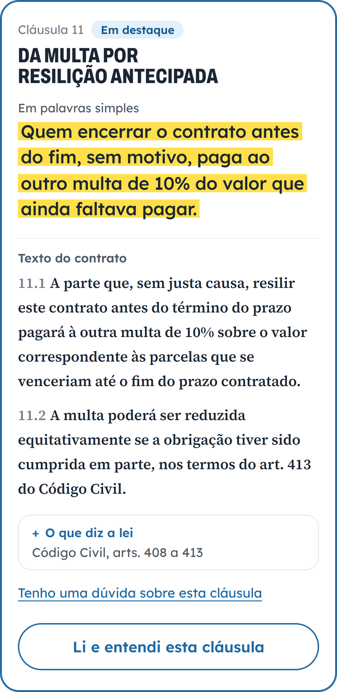
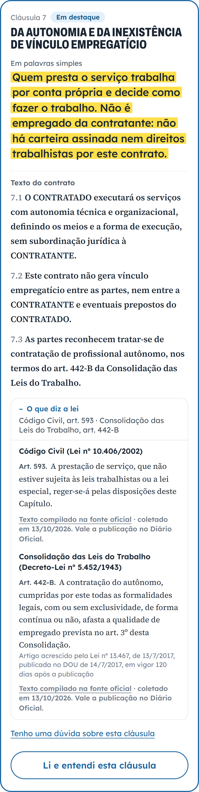
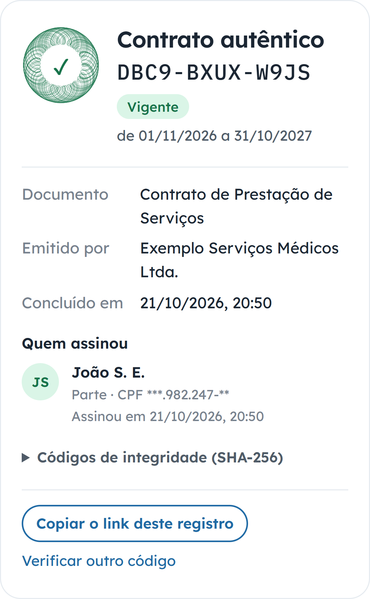

Contrato com bula: a pessoa entende o que está assinando. Estou construindo em público e vou mostrar cada avanço aqui.
o problema
Vi médicos assinando contrato PJ sem entender uma linha: multa, foro, exclusividade. Depois, no problema, descobrem o que assinaram.
O BullaCheck começou por isso. É um sistema de contratos onde a leitura faz parte da assinatura.
a bula
O resumo é o marca-texto amarelo. O texto completo do contrato fica logo abaixo, e é ele que vale.
A tela é a de quem assina, no celular.

a ciência
Multa, foro, autonomia: cada uma pede "li e entendi", e isso fica registrado com data e hora.
Embaixo, o artigo da lei que sustenta a cláusula, no texto compilado.

a prova
Código e QR em cada página. Qualquer pessoa confere que o documento não mudou, sem precisar de conta.
Junto vai o dossiê: quem assinou, quando, de onde, e o que confirmou ter lido.

build in public
O próximo: o primeiro contrato enviado para alguém de fora, assinado pelo celular.
Segue para acompanhar.